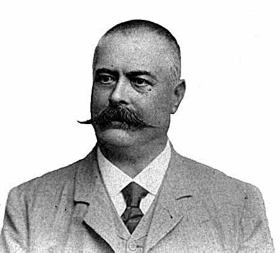
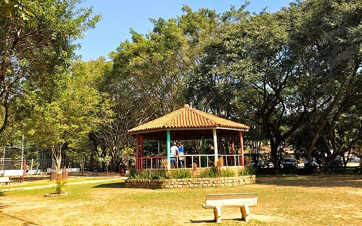
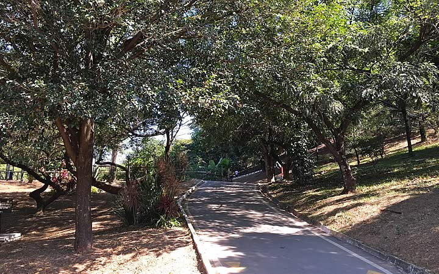
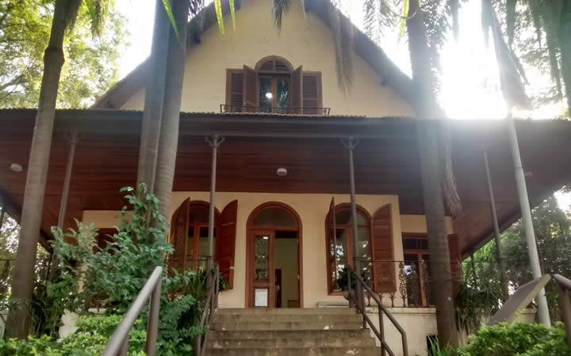

Na região onde hoje se situa Osasco e em seus arredores existiam vários sítios e chácaras. Próximo às margens do Tietê, no século XIX, havia uma aldeia de pescadores e grandes fazendas. Uma delas foi vendida ao italiano Antonio Agu, um imigrante com quem começa a nossa história.
Antonio Agu foi proprietário de vários negócios e terras na região. Em 1887 comprou uma gleba de terra no Km 16 da Estrada de Ferro Sorocabana. Por volta de 1890, resolveu ampliar sua olaria e convidou para sócio o Barão Dimitri Sensaud De Lavaud. A pequena fábrica, que produzia tijolos e telhas, passou a fazer também tubos e cerâmicas, dando origem à primeira indústria da cidade, a Companhia Cerâmica Industrial de Vila Osasco.
Após outras iniciativas, em 1895, Agu construiu a Estação Ferroviária, erguendo várias casas nos arredores para abrigar os operários que chegavam para atuar na obra. Os dirigentes da Estrada de Ferro quiseram batizar a estação com o nome do principal empreendedor da região, mas Antonio Agu pediu que a homenagem não fosse dada a ele e sim à sua cidade natal na Itália: Osasco. Daí por diante Osasco, como a região passou a ser conhecida, não parava de crescer, muitas pessoas conhecidas do comércio e diversas indústrias importantes se instalaram por aqui. Para operar as máquinas dessas indústrias foram contratados imigrantes. Essa mão-de-obra começou a formar a população do local e deu origem a seu povo.
Fonte: https://cidades.ibge.gov.br/brasil/sp/osasco
Osasco possui diversos pontos turísticos, locais de visitação turística com relevância cultural e/ou natural, com a possibilidade de contemplação, lugares incríveis para você visitar é o que não falta! Para te ajudar separamos 3 que você precisa conhecer.
O Parque Municipal Chico Mendes fica no bairro de City Bussocaba e tem mais de 100 mil/m² de extensão. Além de toda área verde e preservação, o parque conta com quadras cobertas e outros espaços esportivos. Ademais, ele também tem um lago, exatamente onde é a nascente do Córrego Bussocaba.
Então, tal riacho desemboca no Rio Tiete e é crucial para a estrutura hídrica paulista. Por fim, o Parque também tem um campo de futebol e até mesmo um playground para crianças. E se engana quem pensa que esses são só os atrativos. O Parque Municipal Chico Mendes também tem uma fauna incrível, com patos, tartarugas, peixes e até mesmo um minhocário. Sendo assim, o Parque é um passeio incrível para casais, crianças e famílias.
O Parque Ecológico Dionísio Alvarez Mateos também conhecido como Jardim das Flores ou Parque da Fito. Ele tem esse último apelido justamente porque fica próximo da Fundação Instituto Tecnológico de Osasco, muito tradicional na cidade. Para chegar ao parque, é possível pegar o transporte público.
Além disso, também dá para chegar de carro, pois o Parque conta com um estacionamento com 45 vagas. É possível ter contato com espécies da fauna e aproveitar os aparelhos de ginástica. Também temos um parque infantil e até mesmo pistas de caminhada. Sendo assim, ele é muito visitado por aqueles que gostam de correr e se exercitar, já que sua geografia é tortuosa e cheia de altos e baixos, gerando um desafio – mas com segurança.
O Museu Dimitri Sensaud de Lavaud, também conhecido como Museu de Osasco, fica num casarão do século XIX. O local se tornou o museu em 1976. O casarão é tão bonito que só a arquitetura já valeria a pena a visita. Além disso, o museu fica na região da Avenida dos Autonomistas, com facilidade de acesso. Atualmente, sua exposição conta um pouco da história da cidade. Portanto, é um lugar especial principalmente para quem é morador de Osasco.
É claro que também é interessante para quem tem interesse especial por história do Brasil. Ademais, também um ótimo atrativo para quem é fã de história da aviação. Afinal, o museu tem esse nome porque é em homenagem ao aviador, que foi o responsável por realizar o primeiro voo da América Latina. Além disso, esse voo saiu justamente da fronte do casarão e a réplica do avião utilizado pode ser vista durante a visita. Ou seja, é uma visita muito especial.
Fonte: https://www.transportal.com.br/o-que-fazer-em-osasco/
Nascido e criado em Osasco, Rogério Lins foi eleito, em 2016, o prefeito de Osasco com a maior votação da história da cidade. Formado em Direito, casado com Aline Soares Lins e pai de Beatriz e Fernanda, Lins possui mais de uma década de experiência na vida pública.
Iniciou sua carreira pública em 2004 como diretor na Secretaria de Esporte, Recreação e Lazer. Em 2008 foi eleito o vereador mais jovem do município e tornou-se secretário de Indústria, Comércio e Abastecimento no mesmo ano.
Destacando-se por seu trabalho que sempre uniu inovação e experiência, em 2012, novamente foi eleito vereador e obteve uma das maiores votações do Legislativo osasquense, além de receber por seu mandato o prêmio de vereador mais atuante pelo Instituto Tiradentes.
Em 2014 conquistou a maior votação para deputado federal de Osasco e tornou-se primeiro suplente do cargo por São Paulo. Foi reeleito nas Eleições Municipais 2020 com a maior votação da história do município, em primeiro turno, com 60,94% dos votos válidos.
Fonte: https://osasco.sp.gov.br/gabinete-do-prefeito/
Fonte: https://cidades.ibge.gov.br/brasil/sp/osasco/panorama